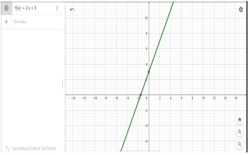

FUNCION LINEAL
En precálculo, una función lineal es una relación matemática que describe cómo cambia una cantidad en relación con otra de manera constante. Es decir, a medida que una variable (usualmente llamada "x") aumenta o disminuye, la variable dependiente (generalmente llamada "y") cambia en la misma proporción todo el tiempo. La expresión general de una función lineal es:
y = mx + b
Donde:
- "y" representa el valor de la variable dependiente.
- "x" es el valor de la variable independiente.
- "m" es la pendiente, que indica cuánto "y" cambia por cada unidad de cambio en "x".
- "b" es la ordenada al origen, que es el valor de "y" cuando "x" es igual a cero.
En resumen, una función lineal describe una relación directa y constante entre dos variables. La pendiente "m" determina la inclinación de la línea en un gráfico, y la ordenada al origen "b" indica dónde la línea cruza el eje vertical.
Ejemplo de una función lineal:
Considera la función lineal:
f(x)=2x+3
Solución:
En esta función lineal, la pendiente (coeficiente "m") es 2, y la ordenada al origen (coeficiente "b") es 3. Vamos a ver cómo podemos usar estos valores para entender la función y encontrar algunos puntos clave:
- Pendiente (m): La pendiente indica cuánto cambia la variable dependiente (en este caso, "f(x)") por cada unidad de cambio en la variable independiente (en este caso, "x"). En este ejemplo, la pendiente es 2, lo que significa que por cada unidad adicional que aumenta "x," "f(x)" aumenta en 2 unidades.
- Ordenada al origen (b): La ordenada al origen es el valor de "f(x)" cuando "x" es igual a cero. En este caso, la ordenada al origen es 3, lo que significa que cuando "x" es igual a cero, "f(x)" es igual a 3.
Por lo tanto, la solución implica que:
- La pendiente (m) de la función es 2, lo que significa que la función es una línea recta que sube hacia la derecha.
- La ordenada al origen (b) es 3, lo que significa que la línea cruza el eje vertical en el punto (0, 3).
Entonces, para esta función lineal, la gráfica es una línea recta con una pendiente de 2 y cruza el eje vertical en el punto (0, 3). A medida que "x" aumenta o disminuye, "f(x)" cambiará constantemente en incrementos de 2 unidades. Por ejemplo:
- Cuando "x" es 1, "f (1)" será igual a 2(1) + 3 = 5.
- Cuando "x" es -1, "f (-1)" será igual a 2(-1) + 3 = 1.
Y así sucesivamente.
